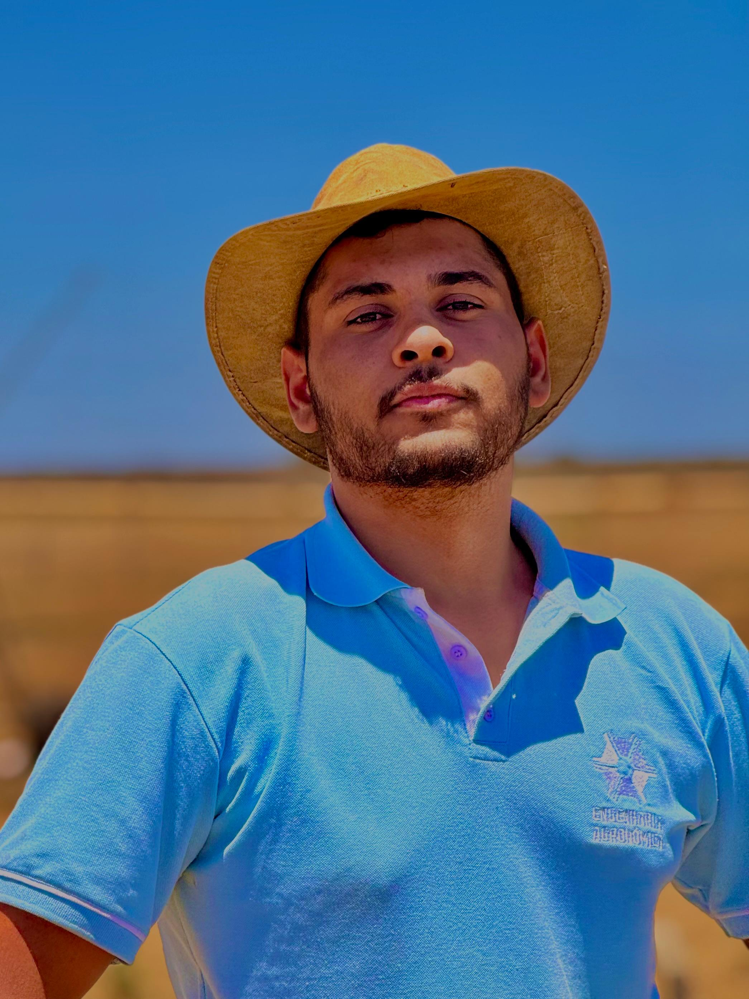
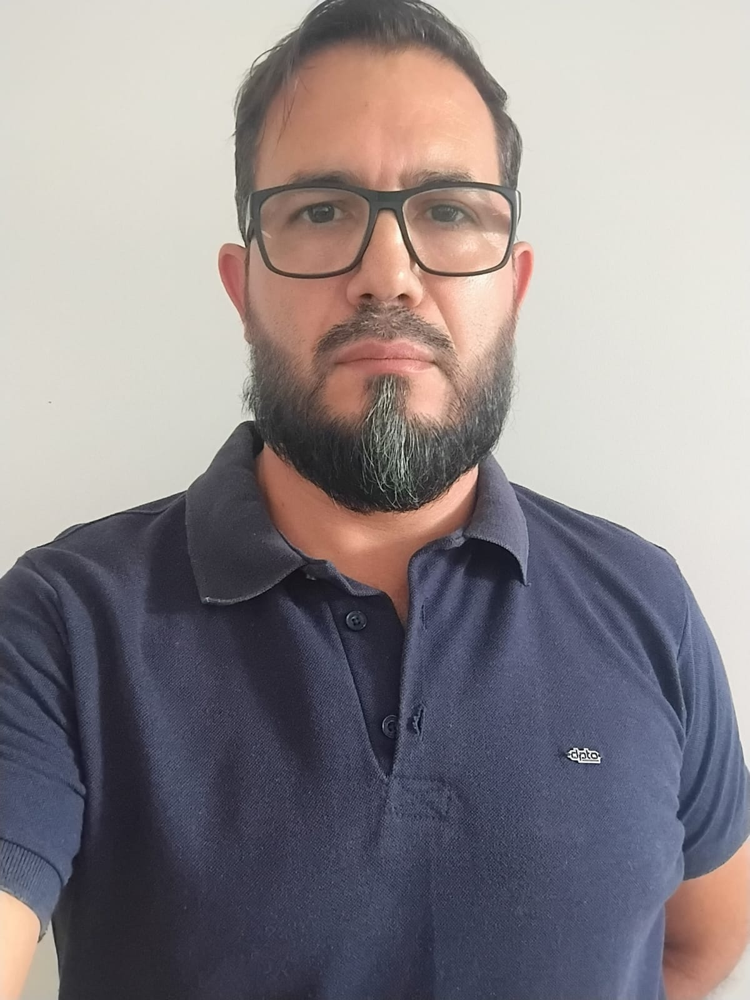
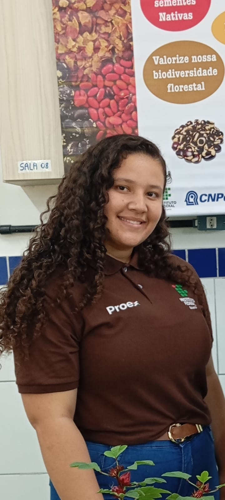
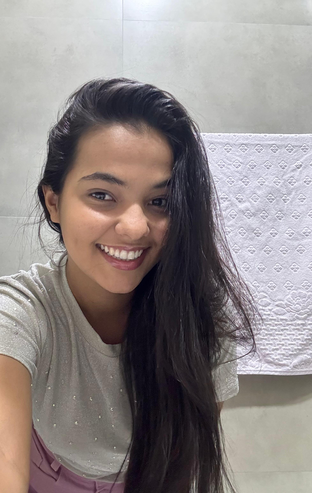
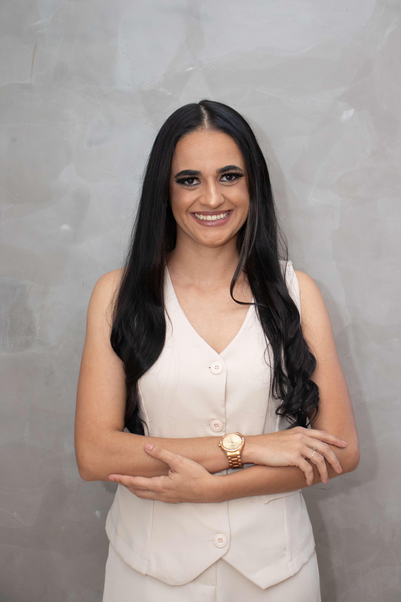
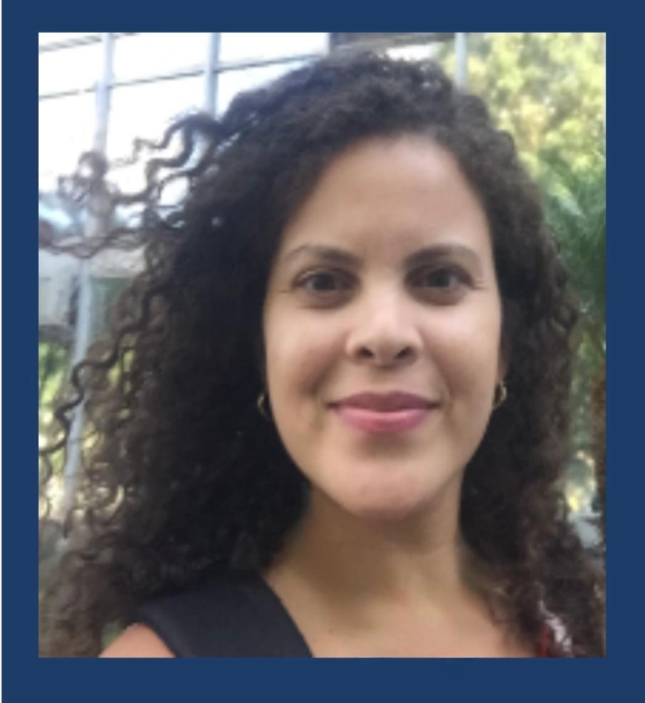

X SEAPO
Seminário de Agroecologia e Produção Orgânica
IF Baiano · Campus Guanambi · Bahia
Dez edições construindo ciência com cheiro de terra. O X SEAPO reúne agricultores, pesquisadores, estudantes, extensionistas e comunidade em torno da agroecologia, da produção orgânica e do futuro do Sertão Produtivo.
Um dia inteiro de agroecologia no Sertão
O X SEAPO celebra dez anos de um seminário que cresceu com o território e com as pessoas que o fazem acontecer.
Palestras
Especialistas nacionais sobre emergência climática, conhecimento indígena e produção orgânica na Bahia.
Minicursos
Mais de 10 oficinas simultâneas: pragas, aves orgânicas, irrigação, adubação, PANCs, PNAE e muito mais.
Certificação
Entrega oficial dos certificados de Conformidade Orgânica a agricultores do território.
Stands & Feira
Feira agroecológica, estandes de expositores e parceiros institucionais confirmados.
21 e 22 de agosto de 2026
IF Baiano Campus Guanambi · Bahia
🌅 Manhã — Auditório Principal
🛒 Feira Orgânica — Estacionamento do Campus
🌿 Stands e Exposições — Em frente ao estacionamento (entrada)
Stands Externos
☀️ Tarde — 13h00 às 17h00
Minicursos e Oficinas Simultâneos
Controle de Insetos na Agricultura Orgânica

Fabricação e Uso de Extratos Vegetais na Adubação de Plantas
Reunião Ordinária da CPORg
Criação de Aves Orgânicas
Plantas Medicinais Orgânicas e Rentáveis

PNAE e PAA para Produtos Orgânicos

Minhocultura Orgânica e Rentável

Qualidade da Água para Irrigação e Higienização de Hortaliças Orgânicas
Cobertura do Solo para Sistemas Orgânicos

Saberes e Sabores do Sertão: Caracterização de PANCs Utilizadas na Alimentação Popular
Cultivo de Fungos para Sistemas Orgânicos
Oficina: Professoralidades em Ágora
Oficina: Conflitos Agrários na Bahia e Quais Perspectivas para Amenizar e Promover o Desenvolvimento dos Territórios

Oficina: Plano Safra da Agricultura Familiar 2026/2027
Agroecologia, a Avaliação da Aprendizagem e a Educação do Campo: instrumentos avaliativos para a emancipação e a formação para a felicidade
Pela Responsabilidade e pelo Afeto: filosofia e agroecologia entre Hans Jonas e Byung Chul Han
🌅 Manhã
🌳 Feira Orgânica e SEAPINHO
Submissão de Trabalhos
Compartilhe sua pesquisa em agroecologia e produção orgânica com a comunidade científica do X SEAPO.
Resumo
Apresentação condensada da pesquisa. Utilize o template de resumo disponível no Drive para formatação correta.
Relato de Experiência
Compartilhe práticas e vivências no campo da agroecologia. Use o template de relato disponível no Drive.
Artigo Científico
Contribuição completa com resultados de pesquisa. Utilize o template de artigo disponível no Drive.
Hotéis em Guanambi
Sugestões de hospedagem em Guanambi para facilitar o planejamento dos participantes. As informações e valores são de responsabilidade de cada estabelecimento — recomendamos confirmar disponibilidade e preços diretamente com os hotéis antes de realizar a reserva. O SEAPO não possui vínculo com nenhum dos estabelecimentos listados.
Inscrições abertas!
As inscrições para o X SEAPO estão abertas. Garanta sua vaga no maior seminário de agroecologia do Sertão Produtivo.
Nove edições que semearam o X SEAPO
Desde 2017, o SEAPO reúne ciência, extensão e agricultura familiar no IF Baiano Campus Guanambi.


Reviva as edições anteriores
Palestras, registros e momentos das edições que construíram o X SEAPO.
VII SEAPO
Produção orgânica, oficinas e feira agroecológica.
VI SEAPO
Palestras e atividades da sexta edição.
III SEAPO
Memória da feira de base agroecológica.